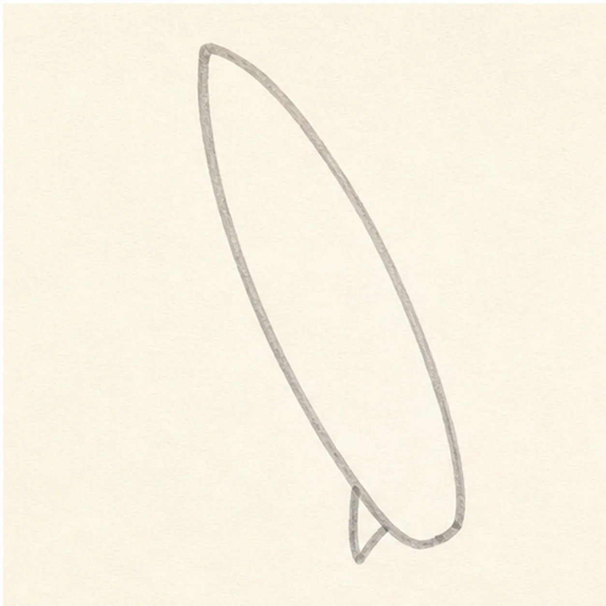
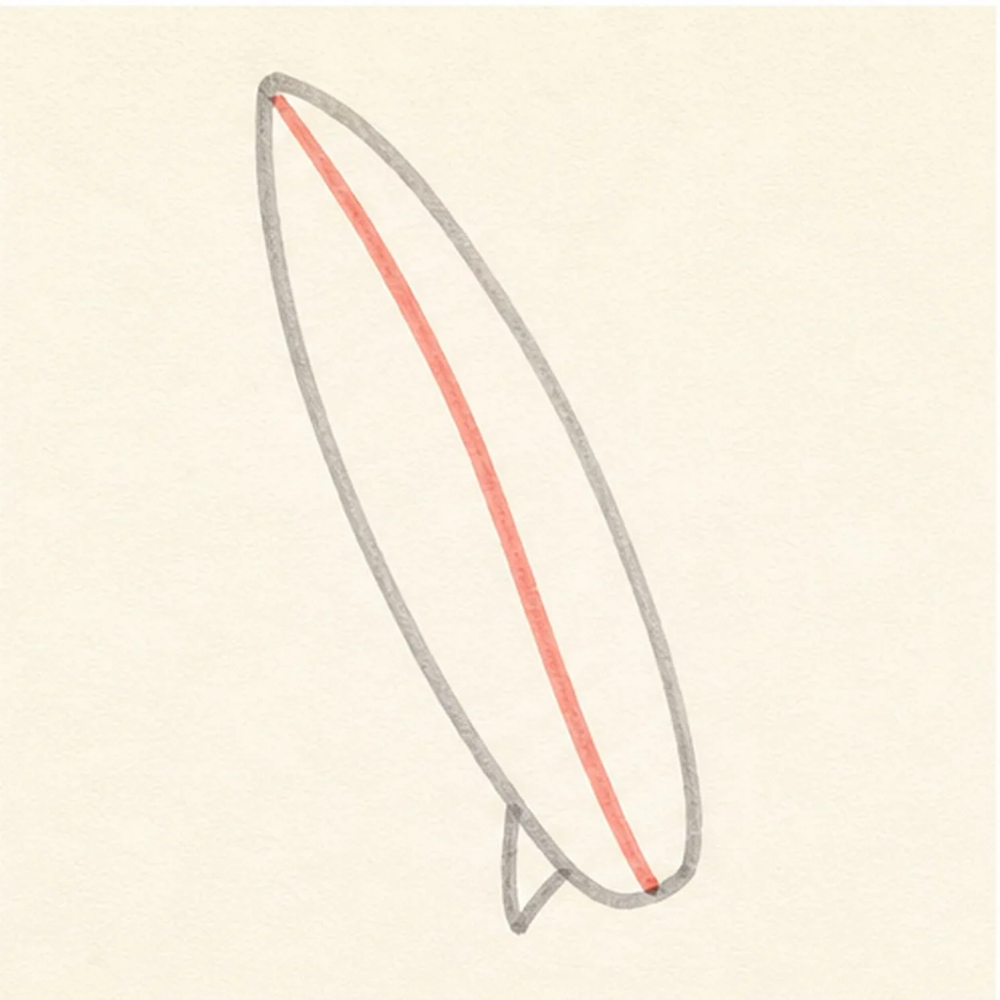
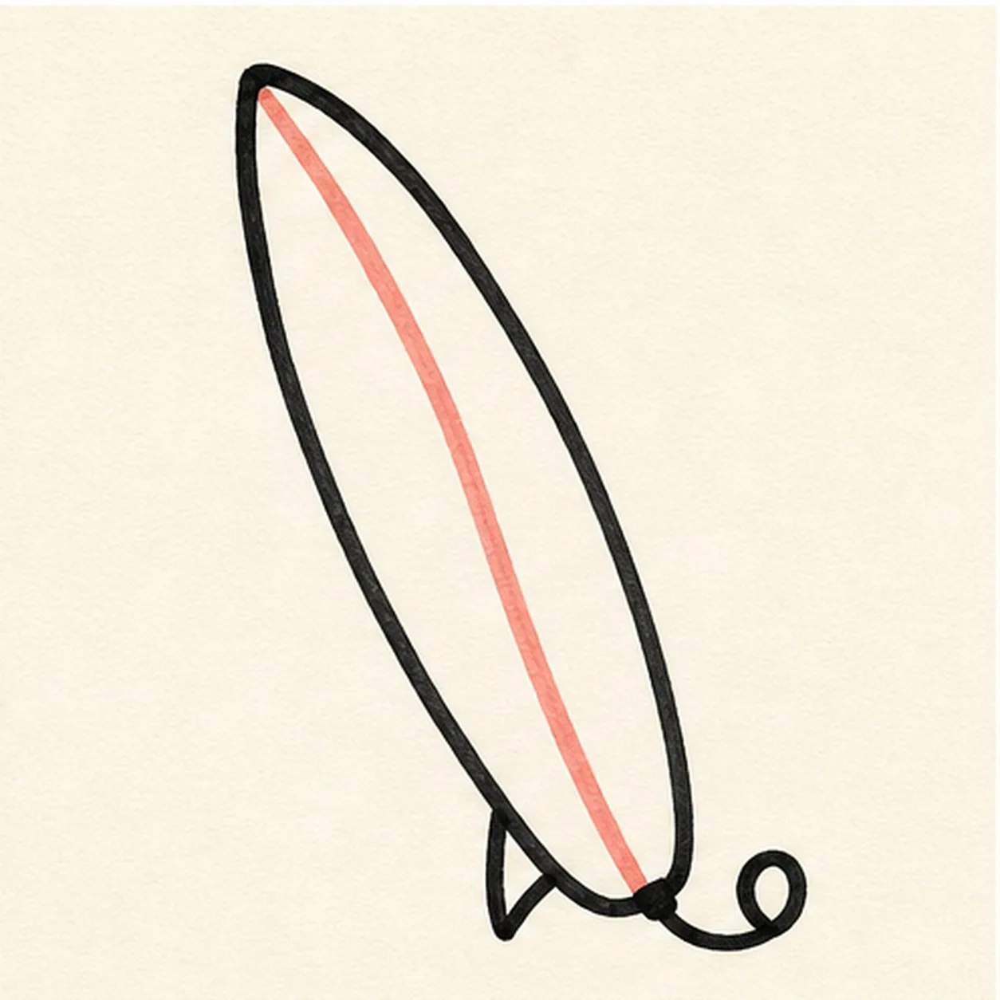
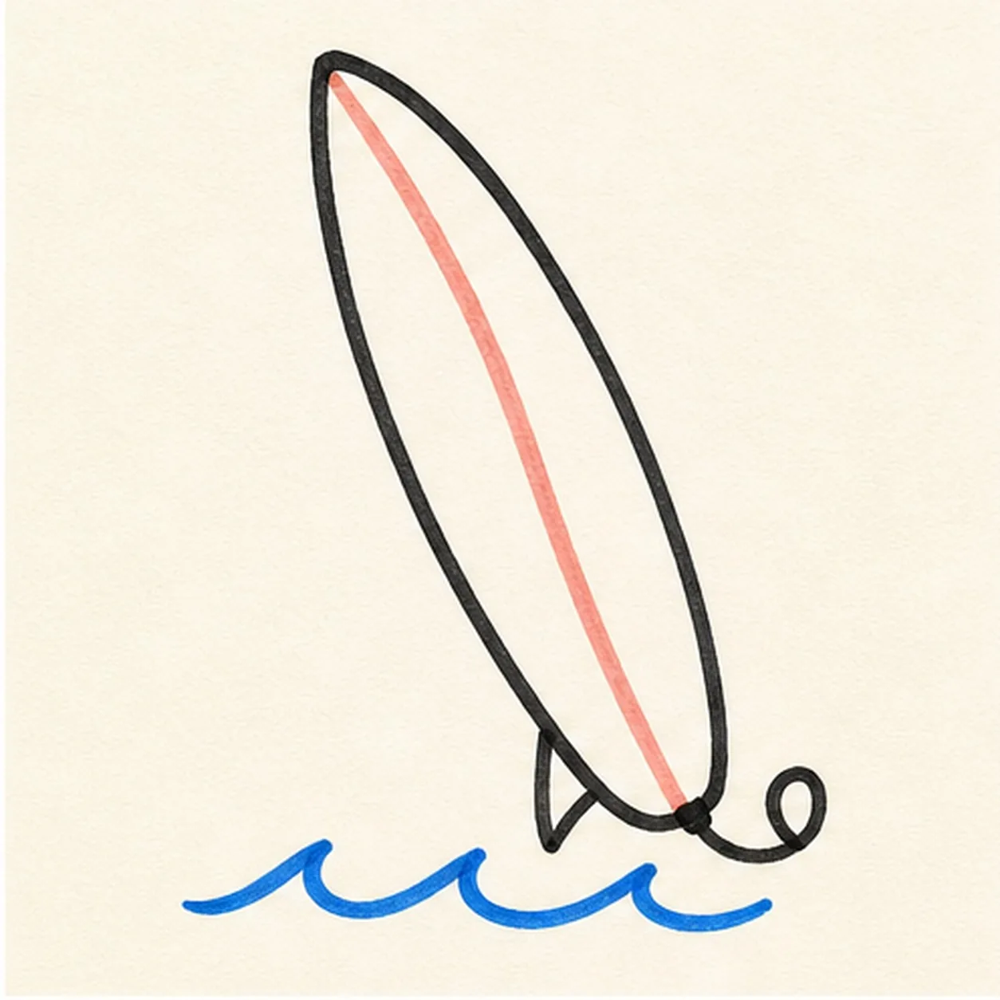
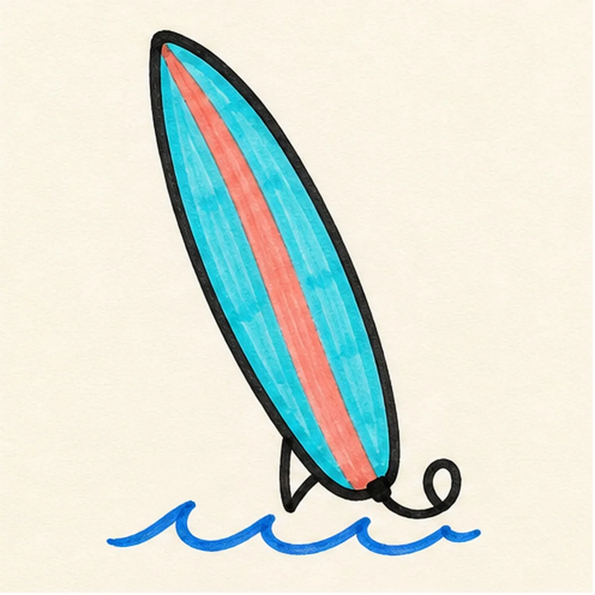

Felt-tip marker mode
Let's draw a cartoon surfboard
Treat this as one playful practice round: sketch the idea loosely, simplify the shapes, then commit with confident marker outlines and bright fills.
-
01

Stretch the board shape
Use a light construction pass to draw one tall pointed-nose board and a small triangular fin at its tail.
Doodle tip: Ghost the long outer curve twice before touching the marker down. Pull the stroke toward your wrist so the board stays smooth instead of scratchy.
-
02

Sweep in the stripe
Add one wide curved center stripe inside the established board shape.
Doodle tip: Keep the stripe's edges roughly parallel to the board edges. Compare the two skinny side spaces instead of measuring every curve.
-
03

Hook the leash and ink
Add a short curled leash at the tail, then trace the existing board, fin, and stripe with a confident black outline.
Doodle tip: Rotate the paper for the long curve and pull it in one steady pass. A slightly imperfect marker edge feels more alive than many tiny corrections.
-
04

Tuck in small waves
Draw three simple blue wave curves under the already inked surfboard.
Doodle tip: Leave a little air between each wave hump. That negative space keeps the water marks readable at a small size.
-
05

Pull the bright marker color
Fill the existing board cyan, the center stripe coral, and the wave curves blue, following the board's length with your marker strokes.
Doodle tip: Work from each outline inward and let the marker streaks show. That direction makes the board feel long and hand-drawn.
-
06
Ride the color finish
Reinforce the existing black edge, leash, fin, stripe, wave marks, and cyan, coral, and blue fills.
Doodle tip: Stop before adding a face or a whole beach scene. The board, leash, and wave marks already have plenty of comic energy.